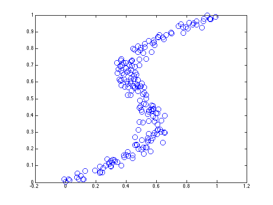
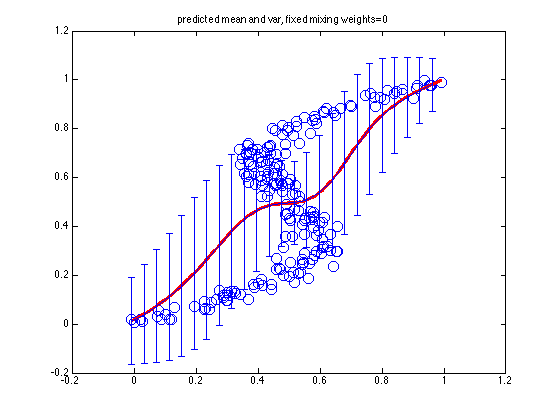
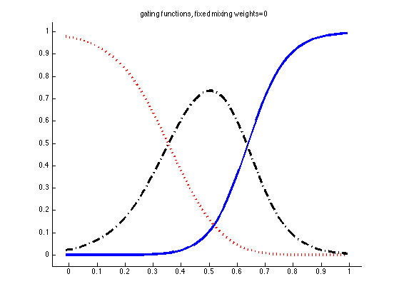
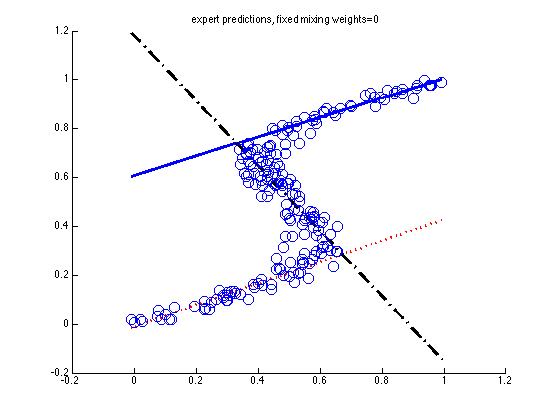
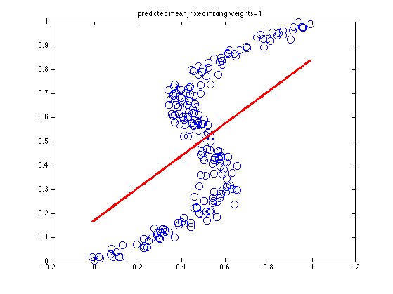
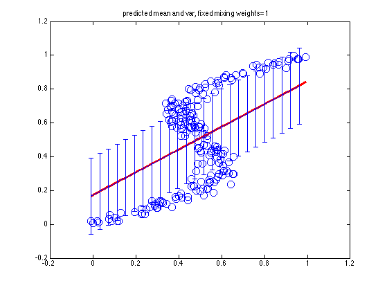
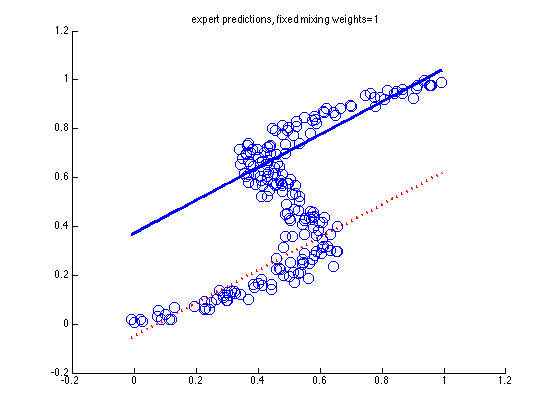

demo of mixture of linear regression experts in 1d
clear all
close all
setSeed(0);
datasource = 3;
switch datasource
case 1,
xtrain = linspace(-1,1,200);
Ntrain = numel(xtrain);
ndx = (xtrain < 0)+1;
w = [-1 1];
ytrain = xtrain.*w(ndx) + 0.5*randn(1,Ntrain);
data = [xtrain(:) ytrain(:)];
K = 2;
case 2,
xtrain = linspace(-1,1,50);
Ntrain = numel(xtrain);
ndx(xtrain < -0.5) = 1;
ndx( (xtrain > -0.5) & (xtrain < 0.5) ) = 2;
ndx(xtrain > 0.5) = 3;
w = 0.01*randn(1,3);
b = [-1 1 -1];
ytrain = xtrain.*w(ndx) + b(ndx) + 0.2*randn(1,Ntrain);
data = [xtrain(:) ytrain(:)];
K = 3;
case 3,
n = 200;
t = rand(n,1);
eta = randn(n,1)*0.05;
x = t + 0.3.*sin(2.*pi().*t) + eta;
data = [x(:) t(:)];
e = 3;
end
N = size(data,1);
ndx = 1:1:N;
X = data(ndx,1);
y = data(ndx,2);
xtest = colvec(linspace(min(X), max(X), 100));
figure;
plot(X, y, 'o', 'markersize', 10); hold on
printPmtkFigure(sprintf('mixexpData'))
for fixmix=[0 1]
switch fixmix
case 0, K=3;
case 1, K=2;
end
model = mixexpFit(X, y, K, 'fixmix', fixmix, 'EMargs', ...
{'verbose', true, 'nrandomrestarts', 2});
[mu, v, post, muk, vk] = mixexpPredict(model, xtest);
figure;
plot(X, y, 'o', 'markersize', 10); hold on
plot(xtest, mu, 'r-', 'linewidth', 3);
title(sprintf('predicted mean, fixed mixing weights=%d', fixmix))
printPmtkFigure(sprintf('mixexpMeanFixmix%d', fixmix))
figure; plot(X, y, 'o', 'markersize', 10); hold on
plot(xtest, mu, 'r-', 'linewidth', 3);
N = numel(xtest); ndx = 1:4:N;
errorbar(xtest(ndx), mu(ndx), sqrt(v(ndx)));
title(sprintf('predicted mean and var, fixed mixing weights=%d', fixmix))
printPmtkFigure(sprintf('mixexpMeanVarFixmix%d', fixmix))
[styles, colors, symbols, str] = plotColors;
figure; hold on
for k=1:K
str = sprintf('%s%s', styles{k}, colors(k));
plot(xtest, post(:,k), str, 'linewidth', 3);
end
title(sprintf('gating functions, fixed mixing weights=%d', fixmix))
axis_pct
printPmtkFigure(sprintf('mixexpGatingFixmix%d', fixmix))
figure; hold on
for k=1:K
str = sprintf('%s%s', styles{k}, colors(k));
plot(xtest, muk(:,k), str, 'linewidth', 3);
end
plot(X, y, 'o', 'markersize', 10);
title(sprintf('expert predictions, fixed mixing weights=%d', fixmix))
printPmtkFigure(sprintf('mixexpExpertsFixmix%d', fixmix))
end
placeFigures
********** Random Restart 1 **********
initializing model for EM
1 loglik: -501.843
2 loglik: 29.07
3 loglik: 42.6499
4 loglik: 65.7241
5 loglik: 84.183
6 loglik: 93.4211
7 loglik: 99.1256
8 loglik: 110.867
9 loglik: 136.633
10 loglik: 160.501
11 loglik: 177.483
12 loglik: 189.049
13 loglik: 198.71
14 loglik: 206.287
15 loglik: 210.92
16 loglik: 213.371
17 loglik: 215.048
18 loglik: 216.149
19 loglik: 216.712
20 loglik: 216.978
21 loglik: 217.111
22 loglik: 217.186
23 loglik: 217.235
24 loglik: 217.271
25 loglik: 217.302
26 loglik: 217.333
27 loglik: 217.366
28 loglik: 217.408
29 loglik: 217.468
30 loglik: 217.56
31 loglik: 217.7
32 loglik: 217.874
33 loglik: 218.007
34 loglik: 218.059
35 loglik: 218.072
********** Random Restart 2 **********
initializing model for EM
1 loglik: -2163.63
2 loglik: 60.4564
3 loglik: 87.3228
4 loglik: 108.394
5 loglik: 120.476
6 loglik: 129.015
7 loglik: 134.172
8 loglik: 137.119
9 loglik: 138.917
10 loglik: 140.217
11 loglik: 141.299
12 loglik: 142.244
13 loglik: 143.064
14 loglik: 143.813
15 loglik: 144.627
16 loglik: 145.728
17 loglik: 147.45
18 loglik: 150.315
19 loglik: 155.15
20 loglik: 163.039
21 loglik: 179.574
22 loglik: 199.953
23 loglik: 209.966
24 loglik: 213.452
25 loglik: 215.192
26 loglik: 216.249
27 loglik: 216.765
28 loglik: 217.006
29 loglik: 217.126
30 loglik: 217.196
31 loglik: 217.242
32 loglik: 217.277
33 loglik: 217.307
34 loglik: 217.338
35 loglik: 217.373
36 loglik: 217.417
37 loglik: 217.481
38 loglik: 217.58
39 loglik: 217.729
40 loglik: 217.902
41 loglik: 218.021
42 loglik: 218.063
43 loglik: 218.073
********** Random Restart 1 **********
initializing model for EM
1 loglik: -396.914
2 loglik: 22.4868
3 loglik: 26.5759
4 loglik: 32.9344
5 loglik: 47.3912
6 loglik: 62.5723
7 loglik: 70.1723
8 loglik: 73.5788
9 loglik: 75.0409
10 loglik: 75.7502
11 loglik: 76.4638
12 loglik: 77.4829
13 loglik: 78.8196
14 loglik: 80.2876
15 loglik: 81.6353
16 loglik: 82.7349
17 loglik: 83.5776
18 loglik: 84.1776
19 loglik: 84.5639
20 loglik: 84.7897
21 loglik: 84.9127
22 loglik: 84.9767
23 loglik: 85.009
24 loglik: 85.0251
25 loglik: 85.0329
********** Random Restart 2 **********
initializing model for EM
1 loglik: -276.146
2 loglik: 44.5961
3 loglik: 60.6044
4 loglik: 71.7382
5 loglik: 76.2903
6 loglik: 77.7467
7 loglik: 78.2016
8 loglik: 78.3407
9 loglik: 78.3819
10 loglik: 78.3942
11 loglik: 78.3982


    

